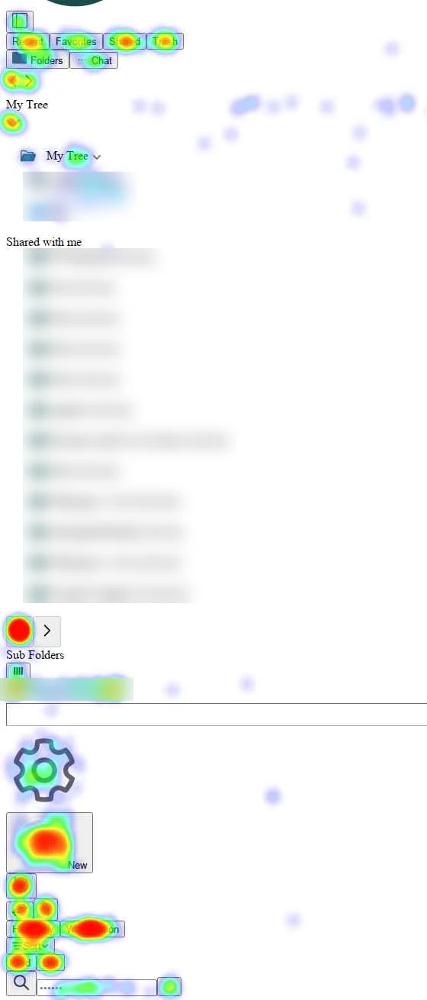
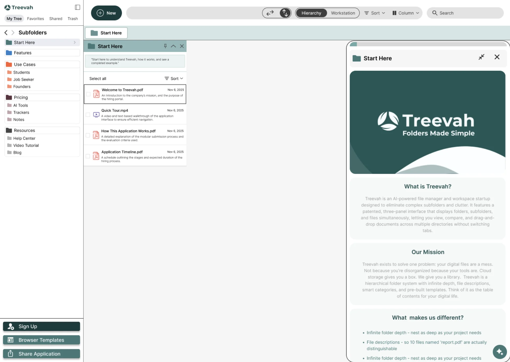
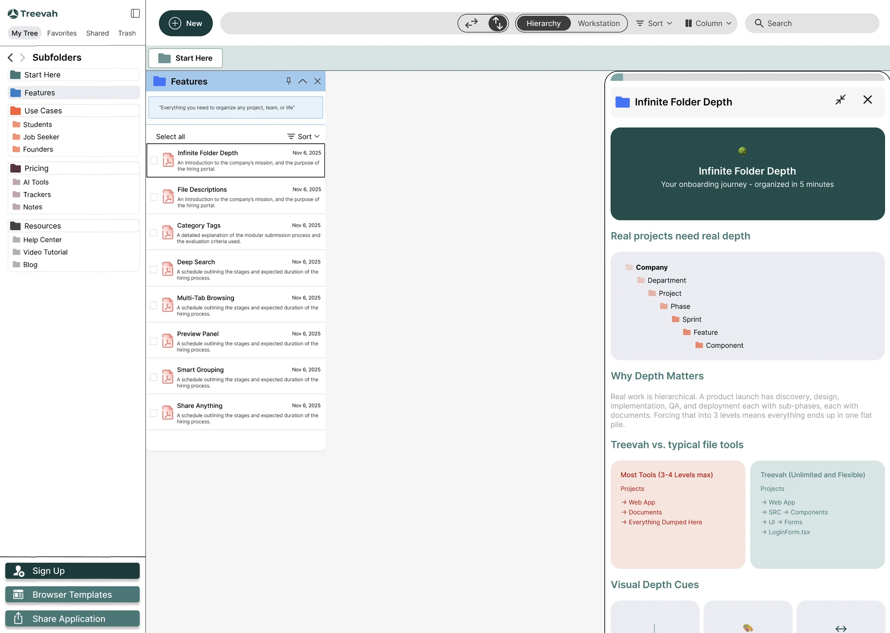
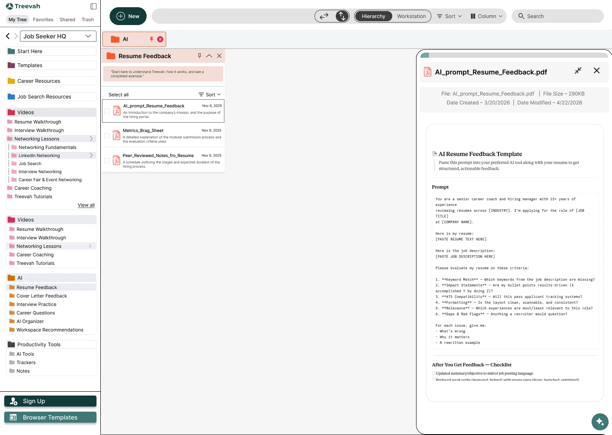
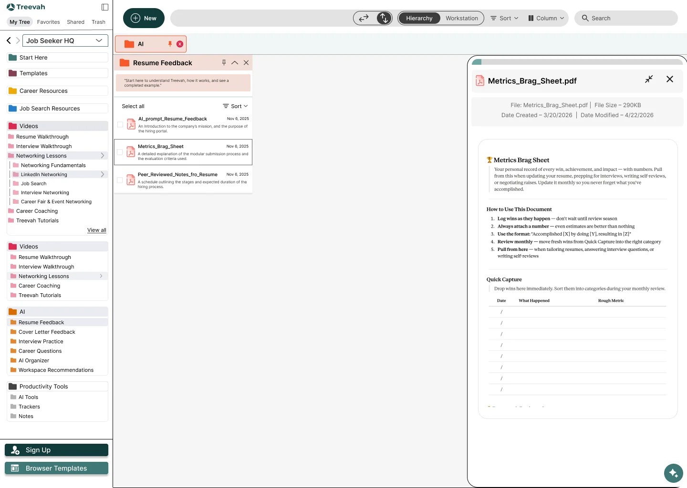

The problem: a promising idea, shaky foundations
Most file tools show one folder at a time. Treevah opens folders side by side, so you can see how everything fits together. By summer 2026 the product was in its eighth alpha, and two things were unclear: whether the screens being built still matched the design, and whether new users could make sense of it without help.
My summer, in two halves
May–June · Design
- Audited every component in the web and mobile apps, on my own
- Built and maintained design system components and standards
- Joined feature brainstorms and pitched ideas
- Prepared design handoffs for engineering
July–August · Research
- Wrote the plan for the Alpha 8 study
- Recruited and ran think-aloud sessions with new users
- Set up Microsoft Clarity and analyzed its recordings, heatmaps and click data
- Helped synthesize findings into the Alpha 8 research report
- Helped turn findings into priorities for Alpha 9
Auditing 766 components
I went screen by screen through the web and mobile apps and logged every component: its level (atom, molecule, organism), its variants, whether it existed in the design system and in code, any accessibility problems, and whether it matched the handoff file engineers built from.
In the design system 585 web components
Matches the handoff file 585 web components
Accessibility, mobile 181 mobile components
Watching new users start from nothing
I wrote the plan for the Alpha 8 study: the scenarios, the four tasks, what observers should record, and the research setup in Microsoft Clarity and FigJam. Every participant started in the same empty workspace and played one role: a college student starting a semester, or a job seeker in the middle of a search. Each intern on the team recruited and ran sessions with one of each, recording the screen, audio and think-aloud comments.
- Build a workspaceFrom a blank page, with no hints about folders or depth
- Organize real filesUpload about 20 realistic files and sort them
- Find them againRetrieve files, watching paths, search and wrong clicks
- Arrange the workspaceOpen folders, switch views, set it up for daily use
What we found
People loved the idea. In the survey, 73% said that if Treevah disappeared, what they’d miss most is seeing several folders side by side on one canvas. The trouble was in the basics around it.
How easy was it? Average rating from 1 to 5, 30 existing users, mostly software engineers
- Creating folders4.70
- Creating files4.37
- Organizing documents3.97
- Managing larger projects3.70
- Finding things later3.63
- Returning to earlier work3.53
The moderated sessions added a twist: existing users rated creating folders the easiest task, yet new users kept creating folders in the wrong place. Five problems came up again and again:
- Folders landed in the wrong place
New folders appeared under the parent instead of the folder people had selected.
- People lost their place
As more panels opened, it got hard to tell where you were and how folders related.
- The workspace got crowded
Toolbars, panels and popups competed with the files themselves.
- Actions gave no feedback
After an upload or a move, people couldn’t tell if it worked, and there was no undo.
- Useful features were hidden
Zoom, toolbar actions and view switching were hard to find or understand.
What the click data showed
I connected the test environment to Microsoft Clarity and did the analysis myself: session recordings, heatmaps, dead and rage clicks, and navigation paths. Clicks told a story that interviews alone missed.

- 9.5%of all clicks went to right-click menus, more than any toolbar button.
- 6.1%went to the rename dialog alone, a lot for a single modal.
- 6 clickson AI Summary, a feature people told us they were excited about.
- 61%of sessions had at least one rage click, and 28% had a dead click.
Click data covers a 30-day window; 47 of the 871 sessions were reviewed as recordings.
From findings to Alpha 9 priorities
We affinity-mapped the issues from founder notes and follow-up sessions, then sorted them by how badly they blocked people.
What we recommended
- Create new folders where the user is, and show the path while they do it.
- Keep people oriented with breadcrumbs and clearer lines between parent and child folders.
- Confirm every upload, move and rename, and add undo.
- Calm the workspace: fewer always-on toolbars and panels.
- Replace the blank first screen with starter templates and short guidance.
Inside Treevah
A few screens from the product, shared with Treevah’s permission. The job seeker templates show one way to fill the blank first screen.






What I learned
“He has been dependable, eager to learn, and a pleasure to work with.”
A design system is only as good as its handoff. Most components existed in the system, but half of them no longer matched what engineers were given. The audit gave design and engineering one list to work from.
What people say and what they click can disagree. Participants were excited about AI Summary, but it got six clicks in a month. Pairing sessions with click data kept us honest about what people actually used.
Start studies from a blank page. Asking people to build their own workspace showed where onboarding broke down, which a guided demo would have hidden.
Internal bug details and business data are left out. I’m happy to walk through the full study. Email me